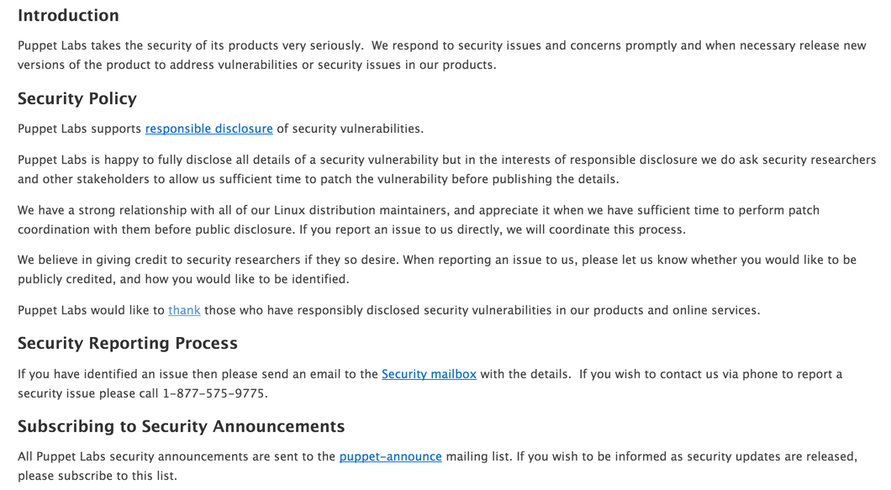
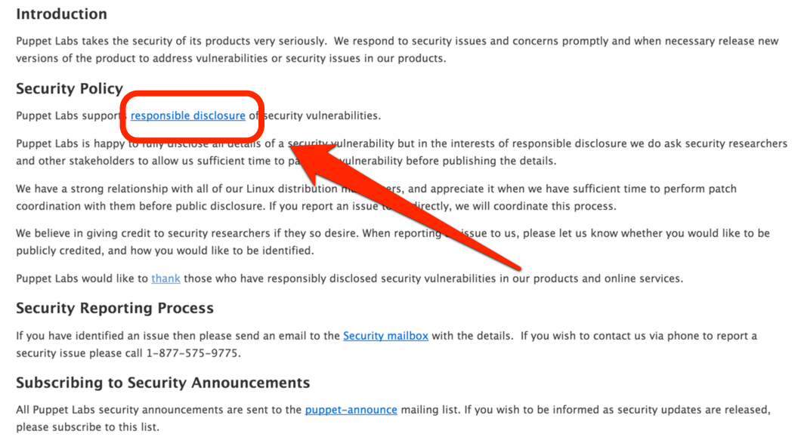
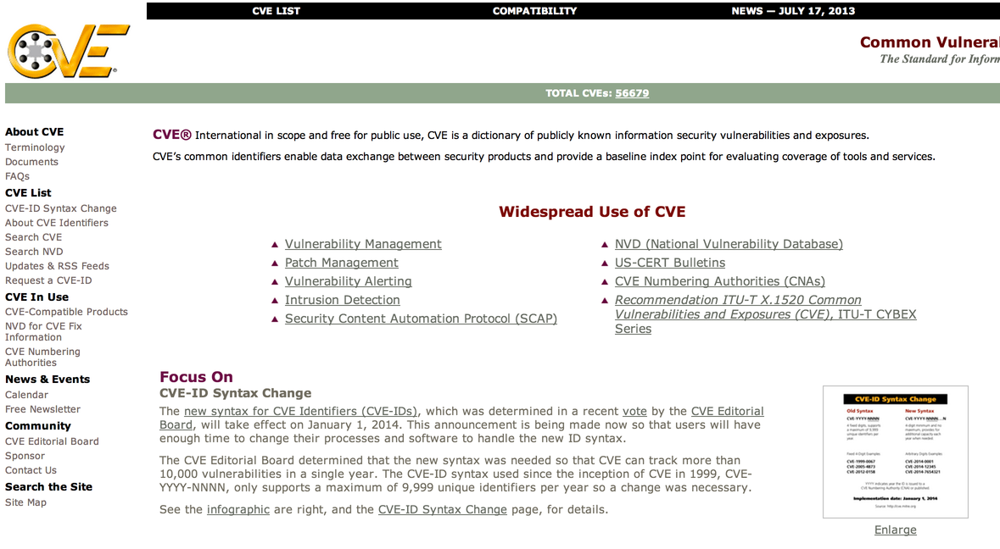
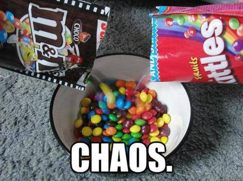
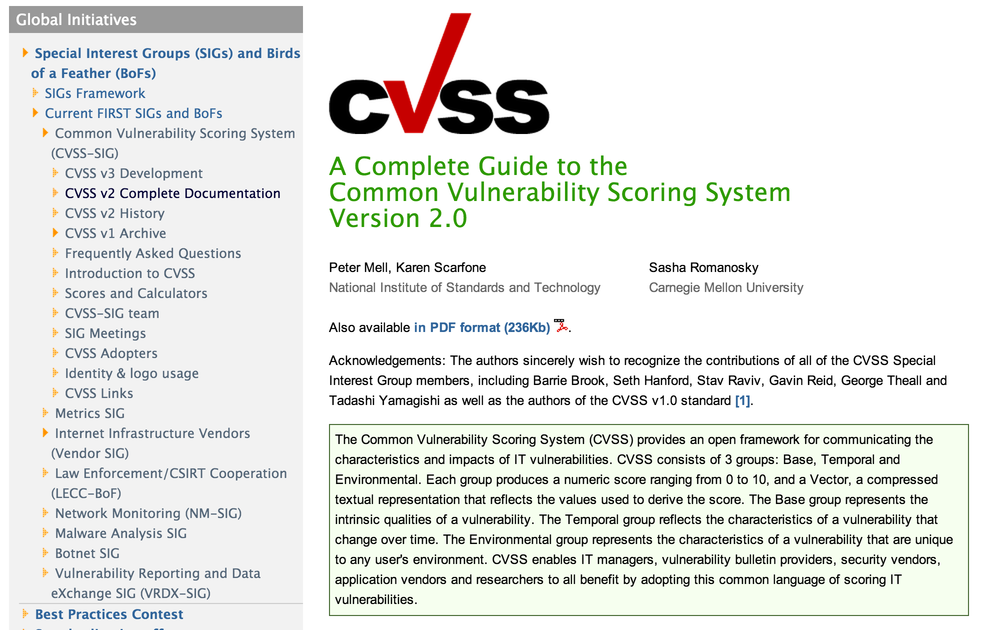
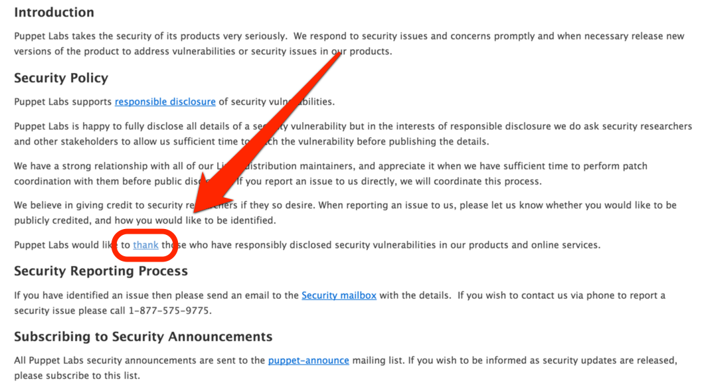
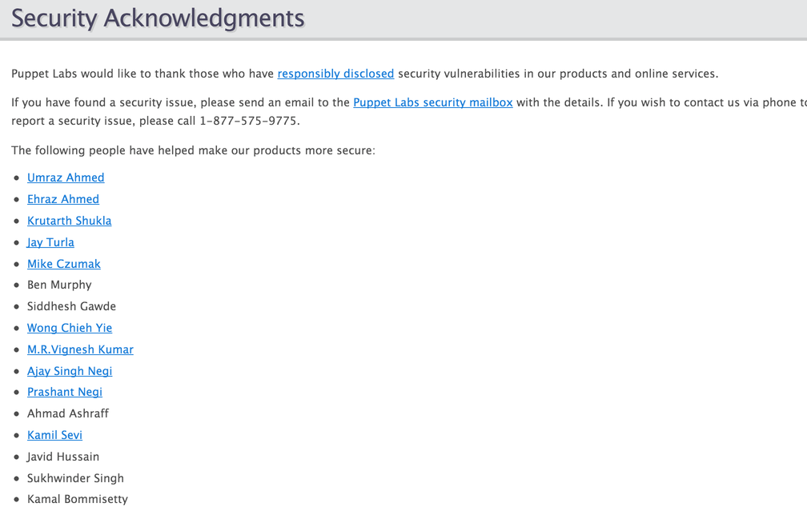
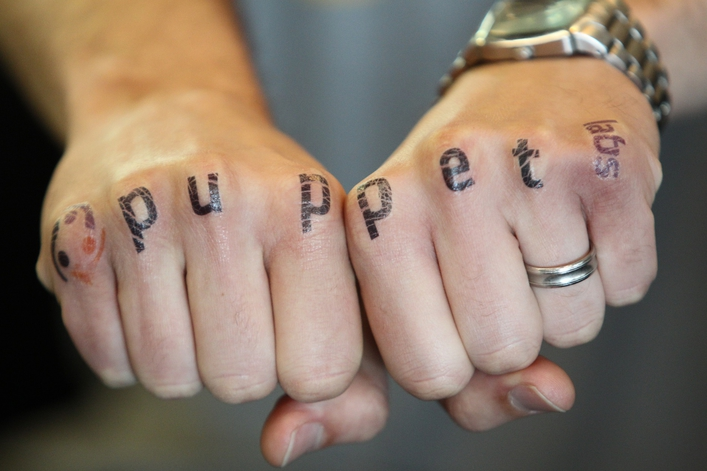

Security Events at Puppet Labs
Code shipped in many forms
What makes these events difficult?Bits for the fix Compatibility Protection of end-users Privacy
For this, we need a process
Processes have a beginning


Vulnerability is discovered
Public Knows?
Responsibly disclosed?
Figure out the impact of issue
Figure out the impact of issue

Determine the impact


Communication
Begin coordination effort
People fixing issue need information
Doc writers might
Website team
No downstream comms yet
Communication
Private bug tracker Request CVE if needed Review who downstream will need info/fixes Decide on versions to support/backport fixes for
External CommunicationTesting looks good? Communication confidential release plan (if required) Establish black-out period Give downstream enough time to react (at least 48 hours)
Decision Points
Publish tests with exploits? When?
Publish all new patches in public VCS? When?
Follow up questions
Make public bug-tracking issues
Attribution Did you forget?


